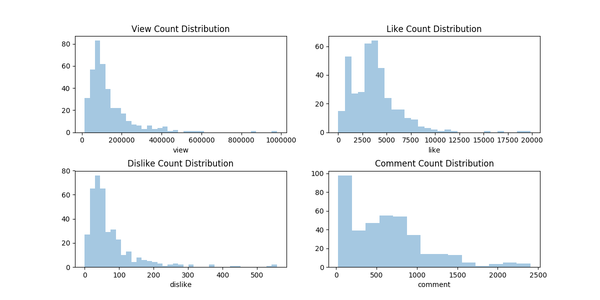
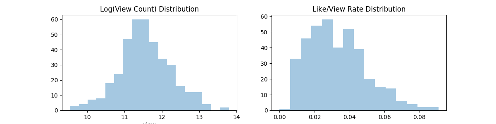
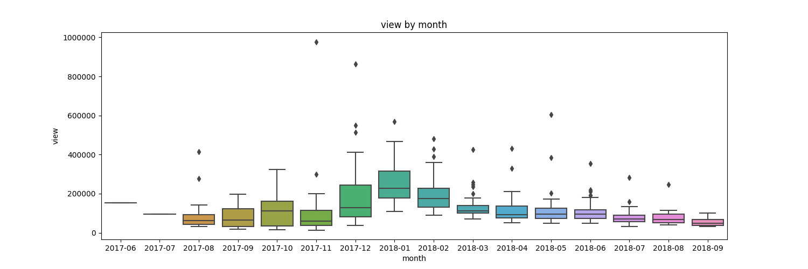
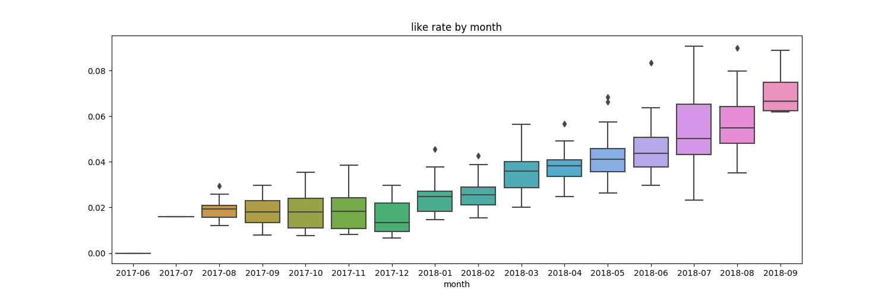
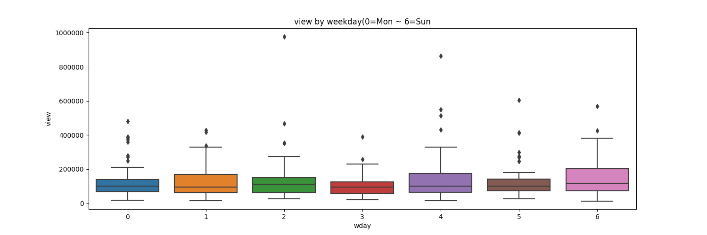

Target: log_view
Data





Model
Model Info: 1
| Model: |
OLS |
Adj. R-squared: |
0.460 |
| Dependent Variable: |
view |
AIC: |
698.3665 |
| Date: |
2018-09-05 17:35 |
BIC: |
1390.6381 |
| No. Observations: |
386 |
Log-Likelihood: |
-174.18 |
| Df Model: |
174 |
F-statistic: |
2.886 |
| Df Residuals: |
211 |
Prob (F-statistic): |
1.79e-13 |
| R-squared: |
0.704 |
Scale: |
0.26411 |
Coef List
|
Coef. |
Std.Err. |
t |
P>|t| |
[0.025 |
0.975] |
| 2017-06 |
0.332 |
0.599 |
0.553 |
0.581 |
-0.850 |
1.513 |
| 2017-07 |
-0.092 |
0.596 |
-0.155 |
0.877 |
-1.267 |
1.083 |
| 2017-08 |
0.652 |
0.149 |
4.362 |
0.000 |
0.357 |
0.946 |
| 2017-09 |
-0.001 |
0.155 |
-0.007 |
0.994 |
-0.307 |
0.305 |
| 2017-10 |
0.544 |
0.139 |
3.922 |
0.000 |
0.270 |
0.817 |
| 2017-11 |
0.085 |
0.158 |
0.539 |
0.591 |
-0.227 |
0.397 |
| 2017-12 |
1.062 |
0.160 |
6.618 |
0.000 |
0.745 |
1.378 |
| 2018-01 |
1.529 |
0.138 |
11.061 |
0.000 |
1.257 |
1.802 |
| 2018-02 |
1.440 |
0.133 |
10.824 |
0.000 |
1.177 |
1.702 |
| 2018-03 |
0.954 |
0.131 |
7.287 |
0.000 |
0.696 |
1.212 |
| 2018-04 |
0.852 |
0.151 |
5.656 |
0.000 |
0.555 |
1.148 |
| 2018-05 |
0.654 |
0.151 |
4.343 |
0.000 |
0.357 |
0.950 |
| 2018-06 |
0.600 |
0.153 |
3.915 |
0.000 |
0.298 |
0.903 |
| 2018-07 |
0.556 |
0.142 |
3.914 |
0.000 |
0.276 |
0.835 |
| 2018-08 |
0.279 |
0.147 |
1.895 |
0.059 |
-0.011 |
0.569 |
| Mon |
1.395 |
0.092 |
15.227 |
0.000 |
1.214 |
1.576 |
| Tue |
1.267 |
0.085 |
14.870 |
0.000 |
1.099 |
1.435 |
| Wed |
1.274 |
0.086 |
14.836 |
0.000 |
1.105 |
1.443 |
| Thr |
1.221 |
0.086 |
14.185 |
0.000 |
1.051 |
1.390 |
| Fri |
1.343 |
0.085 |
15.739 |
0.000 |
1.175 |
1.511 |
| Sat |
1.495 |
0.083 |
17.992 |
0.000 |
1.331 |
1.659 |
| Sun |
1.448 |
0.091 |
15.998 |
0.000 |
1.270 |
1.626 |
| シロ |
0.107 |
0.085 |
1.264 |
0.207 |
-0.060 |
0.275 |
| 実況 |
0.133 |
0.118 |
1.126 |
0.261 |
-0.099 |
0.365 |
| 女子 |
-0.125 |
0.144 |
-0.864 |
0.388 |
-0.409 |
0.160 |
| ゲーム |
-0.208 |
0.160 |
-1.298 |
0.196 |
-0.523 |
0.108 |
| 電脳 |
-0.315 |
0.692 |
-0.455 |
0.650 |
-1.679 |
1.049 |
| 生放送 |
-0.324 |
0.199 |
-1.625 |
0.106 |
-0.717 |
0.069 |
| 少女 |
0.458 |
0.714 |
0.642 |
0.522 |
-0.950 |
1.867 |
| バーチャル |
0.293 |
0.232 |
1.264 |
0.208 |
-0.164 |
0.751 |
| PUBG |
0.401 |
0.245 |
1.640 |
0.102 |
-0.081 |
0.884 |
| 注意 |
-0.014 |
0.318 |
-0.045 |
0.965 |
-0.640 |
0.612 |
| クイズ |
-0.234 |
0.217 |
-1.079 |
0.282 |
-0.661 |
0.193 |
| DQR |
-0.059 |
0.126 |
-0.468 |
0.641 |
-0.307 |
0.189 |
| ライバルズ |
-0.059 |
0.126 |
-0.468 |
0.641 |
-0.307 |
0.189 |
| ドラクエ |
-0.059 |
0.126 |
-0.468 |
0.641 |
-0.307 |
0.189 |
| 挑戦 |
0.349 |
0.202 |
1.729 |
0.085 |
-0.049 |
0.746 |
| YouTuber |
-0.225 |
0.244 |
-0.921 |
0.358 |
-0.707 |
0.257 |
| 知る |
0.279 |
0.193 |
1.444 |
0.150 |
-0.102 |
0.659 |
| 世界 |
0.285 |
0.217 |
1.311 |
0.191 |
-0.143 |
0.714 |
| コラボ |
0.057 |
0.239 |
0.240 |
0.811 |
-0.414 |
0.528 |
| MHW |
-0.130 |
0.216 |
-0.603 |
0.547 |
-0.555 |
0.295 |
| デッキ |
-0.171 |
0.487 |
-0.352 |
0.726 |
-1.131 |
0.788 |
| 動画 |
0.008 |
0.234 |
0.035 |
0.972 |
-0.453 |
0.469 |
| FORTNITE |
-0.538 |
0.242 |
-2.221 |
0.027 |
-1.016 |
-0.060 |
| プレイ |
0.341 |
0.264 |
1.292 |
0.198 |
-0.179 |
0.862 |
| Minecraft |
-0.114 |
0.368 |
-0.311 |
0.756 |
-0.839 |
0.611 |
| 検証 |
-0.250 |
0.269 |
-0.926 |
0.355 |
-0.780 |
0.281 |
| 万 |
0.009 |
0.231 |
0.037 |
0.970 |
-0.447 |
0.465 |
| 作る |
0.220 |
0.240 |
0.918 |
0.360 |
-0.253 |
0.694 |
| 雑学 |
0.113 |
0.318 |
0.356 |
0.722 |
-0.513 |
0.739 |
| 一緒に |
-0.096 |
0.295 |
-0.324 |
0.746 |
-0.678 |
0.486 |
| 今日 |
0.030 |
0.279 |
0.107 |
0.915 |
-0.521 |
0.581 |
| 聞く |
-0.402 |
0.271 |
-1.483 |
0.140 |
-0.935 |
0.132 |
| 衝撃 |
-0.289 |
0.258 |
-1.118 |
0.265 |
-0.799 |
0.220 |
| LIVE |
-0.062 |
0.139 |
-0.447 |
0.655 |
-0.336 |
0.212 |
| VR |
-0.062 |
0.139 |
-0.447 |
0.655 |
-0.336 |
0.212 |
| ヤンデレ |
0.602 |
0.276 |
2.180 |
0.030 |
0.058 |
1.146 |
| 夏 |
-0.032 |
0.287 |
-0.110 |
0.912 |
-0.598 |
0.535 |
| ホラー |
0.297 |
0.351 |
0.847 |
0.398 |
-0.394 |
0.988 |
| 閲覧 |
0.311 |
0.405 |
0.768 |
0.444 |
-0.487 |
1.109 |
| VTuber |
-0.074 |
0.309 |
-0.239 |
0.811 |
-0.683 |
0.535 |
| 為 |
-0.413 |
0.293 |
-1.409 |
0.160 |
-0.991 |
0.165 |
| できる |
0.072 |
0.356 |
0.201 |
0.841 |
-0.630 |
0.773 |
| AI |
-0.253 |
0.297 |
-0.851 |
0.396 |
-0.838 |
0.333 |
| 紹介 |
-0.519 |
0.280 |
-1.858 |
0.065 |
-1.071 |
0.032 |
| 結果 |
0.586 |
0.273 |
2.149 |
0.033 |
0.049 |
1.124 |
| アレ |
-0.178 |
0.275 |
-0.648 |
0.518 |
-0.720 |
0.364 |
| ナイトメア |
0.566 |
0.357 |
1.585 |
0.115 |
-0.138 |
1.270 |
| 意味 |
-0.490 |
0.390 |
-1.255 |
0.211 |
-1.259 |
0.279 |
| いじわる |
0.382 |
0.353 |
1.082 |
0.280 |
-0.314 |
1.077 |
| 謎 |
-0.063 |
0.285 |
-0.220 |
0.826 |
-0.625 |
0.500 |
| チャレンジ |
-0.320 |
0.298 |
-1.072 |
0.285 |
-0.907 |
0.268 |
| 踊る |
0.891 |
0.392 |
2.272 |
0.024 |
0.118 |
1.664 |
| 帰る |
0.154 |
0.474 |
0.324 |
0.746 |
-0.781 |
1.088 |
| マリオ |
-0.139 |
0.795 |
-0.175 |
0.861 |
-1.706 |
1.427 |
| 企画 |
0.195 |
0.352 |
0.554 |
0.580 |
-0.499 |
0.890 |
| 戦 |
-0.200 |
0.322 |
-0.621 |
0.535 |
-0.833 |
0.434 |
| Mobile |
-0.374 |
0.389 |
-0.961 |
0.337 |
-1.141 |
0.393 |
| あれ |
-0.090 |
0.362 |
-0.250 |
0.803 |
-0.805 |
0.624 |
| ご紹介 |
-0.480 |
0.337 |
-1.424 |
0.156 |
-1.144 |
0.184 |
| 発表 |
-0.607 |
0.327 |
-1.859 |
0.064 |
-1.251 |
0.037 |
| 教える |
0.132 |
0.288 |
0.460 |
0.646 |
-0.435 |
0.699 |
| ボイス |
-0.715 |
0.298 |
-2.395 |
0.017 |
-1.303 |
-0.127 |
| 秘密 |
0.816 |
0.349 |
2.339 |
0.020 |
0.128 |
1.503 |
| 声 |
0.141 |
0.348 |
0.404 |
0.687 |
-0.545 |
0.827 |
| マイクラ |
-0.293 |
0.380 |
-0.772 |
0.441 |
-1.043 |
0.456 |
| 作業 |
0.298 |
0.370 |
0.804 |
0.422 |
-0.432 |
1.027 |
| 探す |
-0.327 |
0.319 |
-1.025 |
0.306 |
-0.955 |
0.301 |
| 言う |
0.309 |
0.362 |
0.852 |
0.395 |
-0.405 |
1.022 |
| 爆笑 |
0.615 |
0.373 |
1.648 |
0.101 |
-0.121 |
1.351 |
| 世界初 |
-0.271 |
0.443 |
-0.611 |
0.542 |
-1.144 |
0.602 |
| 決定 |
0.528 |
0.392 |
1.349 |
0.179 |
-0.244 |
1.301 |
| 発売 |
-0.194 |
0.319 |
-0.608 |
0.544 |
-0.822 |
0.435 |
| エース |
0.014 |
0.440 |
0.031 |
0.975 |
-0.853 |
0.880 |
| 強い |
0.064 |
0.394 |
0.163 |
0.871 |
-0.713 |
0.842 |
| テニス |
0.014 |
0.440 |
0.031 |
0.975 |
-0.853 |
0.880 |
| あなた |
-0.368 |
0.349 |
-1.055 |
0.293 |
-1.056 |
0.320 |
| 大公開 |
-0.162 |
0.360 |
-0.450 |
0.653 |
-0.871 |
0.547 |
| 時間 |
0.073 |
0.318 |
0.229 |
0.819 |
-0.555 |
0.701 |
| 言葉 |
0.106 |
0.328 |
0.323 |
0.747 |
-0.541 |
0.752 |
| 勝 |
1.103 |
0.765 |
1.442 |
0.151 |
-0.405 |
2.610 |
| 初 |
0.269 |
0.302 |
0.892 |
0.373 |
-0.325 |
0.864 |
| 音量 |
1.222 |
0.472 |
2.589 |
0.010 |
0.291 |
2.152 |
| 重大 |
0.398 |
0.335 |
1.188 |
0.236 |
-0.262 |
1.057 |
| 初心者 |
0.409 |
0.355 |
1.151 |
0.251 |
-0.291 |
1.109 |
| 発見 |
0.422 |
0.345 |
1.222 |
0.223 |
-0.259 |
1.102 |
| アフレコ |
-0.338 |
0.372 |
-0.910 |
0.364 |
-1.071 |
0.395 |
| 自分 |
1.009 |
0.399 |
2.528 |
0.012 |
0.222 |
1.796 |
| Human |
0.003 |
0.144 |
0.022 |
0.983 |
-0.280 |
0.287 |
| Fall |
0.003 |
0.144 |
0.022 |
0.983 |
-0.280 |
0.287 |
| Flat |
0.003 |
0.144 |
0.022 |
0.983 |
-0.280 |
0.287 |
| みんな |
-0.818 |
0.413 |
-1.981 |
0.049 |
-1.632 |
-0.004 |
| 洞窟 |
-0.028 |
0.320 |
-0.087 |
0.931 |
-0.658 |
0.602 |
| 探検 |
-0.028 |
0.320 |
-0.087 |
0.931 |
-0.658 |
0.602 |
| 再び |
-0.527 |
0.424 |
-1.244 |
0.215 |
-1.362 |
0.308 |
| Fortnite |
-0.483 |
0.489 |
-0.987 |
0.325 |
-1.448 |
0.482 |
| Let's |
-0.044 |
0.444 |
-0.099 |
0.921 |
-0.920 |
0.832 |
| 絶対 |
-0.226 |
0.365 |
-0.619 |
0.537 |
-0.946 |
0.494 |
| vs |
0.037 |
0.495 |
0.074 |
0.941 |
-0.939 |
1.013 |
| キラー |
0.507 |
0.337 |
1.506 |
0.134 |
-0.157 |
1.171 |
| モノマネ |
-0.744 |
0.425 |
-1.753 |
0.081 |
-1.581 |
0.093 |
| アカリ |
1.214 |
0.410 |
2.960 |
0.003 |
0.406 |
2.023 |
| 中 |
-0.165 |
0.335 |
-0.492 |
0.623 |
-0.825 |
0.495 |
| 暑い |
0.073 |
0.360 |
0.202 |
0.840 |
-0.637 |
0.783 |
| 時 |
0.359 |
0.392 |
0.917 |
0.360 |
-0.413 |
1.132 |
| おまけ |
0.334 |
0.368 |
0.907 |
0.365 |
-0.392 |
1.060 |
| リベンジ |
-0.221 |
0.377 |
-0.586 |
0.559 |
-0.963 |
0.522 |
| Hob |
-0.435 |
0.403 |
-1.080 |
0.281 |
-1.230 |
0.359 |
| 続く |
0.300 |
0.438 |
0.684 |
0.495 |
-0.565 |
1.164 |
| Life |
0.173 |
0.361 |
0.478 |
0.633 |
-0.539 |
0.885 |
| ワールド |
0.033 |
0.338 |
0.097 |
0.923 |
-0.634 |
0.700 |
| 開催 |
-0.330 |
0.423 |
-0.780 |
0.436 |
-1.164 |
0.504 |
| 誕生 |
-0.674 |
0.334 |
-2.019 |
0.045 |
-1.332 |
-0.016 |
| 体験 |
-0.380 |
0.352 |
-1.079 |
0.282 |
-1.073 |
0.314 |
| よる |
0.450 |
0.354 |
1.270 |
0.206 |
-0.248 |
1.148 |
| 最後 |
-0.031 |
0.371 |
-0.082 |
0.934 |
-0.761 |
0.700 |
| ロリ |
-0.114 |
0.408 |
-0.279 |
0.781 |
-0.919 |
0.691 |
| 悩む |
-0.804 |
0.388 |
-2.072 |
0.040 |
-1.570 |
-0.039 |
| デビュー |
-0.269 |
0.365 |
-0.737 |
0.462 |
-0.988 |
0.450 |
| 未来 |
-0.220 |
0.375 |
-0.585 |
0.559 |
-0.960 |
0.520 |
| 絶叫 |
0.165 |
0.436 |
0.380 |
0.705 |
-0.693 |
1.024 |
| 相談 |
0.034 |
0.297 |
0.113 |
0.910 |
-0.552 |
0.619 |
| まつ |
0.034 |
0.297 |
0.113 |
0.910 |
-0.552 |
0.619 |
| 記念 |
0.093 |
0.355 |
0.263 |
0.793 |
-0.606 |
0.793 |
| 完全 |
-0.144 |
0.412 |
-0.349 |
0.727 |
-0.957 |
0.669 |
| 初めて |
0.192 |
0.360 |
0.534 |
0.594 |
-0.517 |
0.902 |
| テスト |
-0.166 |
0.331 |
-0.502 |
0.616 |
-0.819 |
0.487 |
| 勝つ |
-0.153 |
0.431 |
-0.354 |
0.724 |
-1.003 |
0.698 |
| 描く |
-0.456 |
0.405 |
-1.126 |
0.262 |
-1.254 |
0.342 |
| 見る |
0.187 |
0.381 |
0.491 |
0.624 |
-0.565 |
0.939 |
| 最強 |
-0.036 |
0.437 |
-0.083 |
0.934 |
-0.898 |
0.825 |
| ドン |
-1.181 |
0.851 |
-1.389 |
0.166 |
-2.859 |
0.496 |
| 生活 |
-0.005 |
0.428 |
-0.011 |
0.991 |
-0.848 |
0.839 |
| 使う |
0.046 |
0.458 |
0.100 |
0.920 |
-0.857 |
0.949 |
| いっぱい |
-0.234 |
0.425 |
-0.550 |
0.583 |
-1.071 |
0.604 |
| 好き |
-0.507 |
0.385 |
-1.316 |
0.190 |
-1.266 |
0.252 |
| ダークソウル |
-0.155 |
0.225 |
-0.688 |
0.492 |
-0.599 |
0.289 |
| リマスター |
-0.155 |
0.225 |
-0.688 |
0.492 |
-0.599 |
0.289 |
| お尻 |
0.315 |
0.448 |
0.704 |
0.482 |
-0.568 |
1.198 |
| 制作 |
-0.931 |
0.526 |
-1.771 |
0.078 |
-1.967 |
0.105 |
| 最大 |
0.725 |
0.396 |
1.829 |
0.069 |
-0.056 |
1.506 |
| 仲間 |
-0.287 |
0.368 |
-0.779 |
0.437 |
-1.012 |
0.439 |
| 運動会 |
-0.938 |
0.553 |
-1.696 |
0.091 |
-2.029 |
0.153 |
| 必見 |
0.965 |
0.490 |
1.970 |
0.050 |
-0.001 |
1.930 |
| 本気 |
1.492 |
0.585 |
2.550 |
0.011 |
0.339 |
2.646 |
| 真似る |
-0.107 |
0.571 |
-0.187 |
0.852 |
-1.233 |
1.019 |
| 砂漠 |
0.209 |
0.461 |
0.453 |
0.651 |
-0.700 |
1.118 |
| マップ |
-0.627 |
0.531 |
-1.181 |
0.239 |
-1.673 |
0.420 |
| 全部 |
0.115 |
0.373 |
0.308 |
0.758 |
-0.621 |
0.850 |
| 大切 |
-0.208 |
0.400 |
-0.519 |
0.605 |
-0.996 |
0.581 |
| ビビリ |
0.558 |
0.451 |
1.237 |
0.217 |
-0.331 |
1.448 |
| 年 |
0.055 |
0.370 |
0.149 |
0.881 |
-0.673 |
0.784 |
| DOOM |
0.228 |
0.355 |
0.643 |
0.521 |
-0.472 |
0.929 |
| 見つける |
-0.191 |
0.355 |
-0.539 |
0.591 |
-0.890 |
0.508 |
| 目 |
0.551 |
0.450 |
1.226 |
0.221 |
-0.335 |
1.437 |
| 空間 |
-0.965 |
0.542 |
-1.782 |
0.076 |
-2.032 |
0.103 |
| つける |
-0.417 |
0.431 |
-0.968 |
0.334 |
-1.267 |
0.433 |
| モデル |
-0.024 |
0.538 |
-0.044 |
0.965 |
-1.084 |
1.037 |
| 動物 |
-1.008 |
0.523 |
-1.929 |
0.055 |
-2.039 |
0.022 |
| もの |
-0.069 |
0.436 |
-0.157 |
0.875 |
-0.927 |
0.790 |
| ターン |
-1.041 |
0.671 |
-1.552 |
0.122 |
-2.364 |
0.282 |
| 出す |
1.084 |
0.674 |
1.609 |
0.109 |
-0.244 |
2.413 |
| 日本語 |
0.025 |
0.464 |
0.055 |
0.957 |
-0.890 |
0.940 |
| 台詞 |
-0.757 |
0.432 |
-1.755 |
0.081 |
-1.608 |
0.093 |
| const |
9.443 |
0.081 |
116.878 |
0.000 |
9.284 |
9.602 |
Model Info: 2
| Omnibus: |
21.687 |
Durbin-Watson: |
1.960 |
| Prob(Omnibus): |
0.000 |
Jarque-Bera (JB): |
40.847 |
| Skew: |
0.332 |
Prob(JB): |
0.000 |
| Kurtosis: |
4.449 |
Condition No.: |
16957462795448884 |
Important Words (p_value < 0.1)
| word |
Coef |
| 動物 |
-1.008 |
| 空間 |
-0.965 |
| 運動会 |
-0.938 |
| 制作 |
-0.931 |
| みんな |
-0.818 |
| 悩む |
-0.804 |
| 台詞 |
-0.757 |
| モノマネ |
-0.744 |
| ボイス |
-0.715 |
| 誕生 |
-0.674 |
| 発表 |
-0.607 |
| FORTNITE |
-0.538 |
| 紹介 |
-0.519 |
| 挑戦 |
0.349 |
| 結果 |
0.586 |
| ヤンデレ |
0.602 |
| 最大 |
0.725 |
| 秘密 |
0.816 |
| 踊る |
0.891 |
| 必見 |
0.965 |
| 自分 |
1.009 |
| アカリ |
1.214 |
| 音量 |
1.222 |
| 本気 |
1.492 |